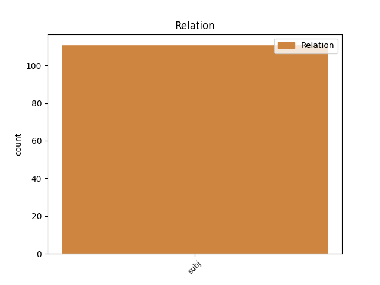
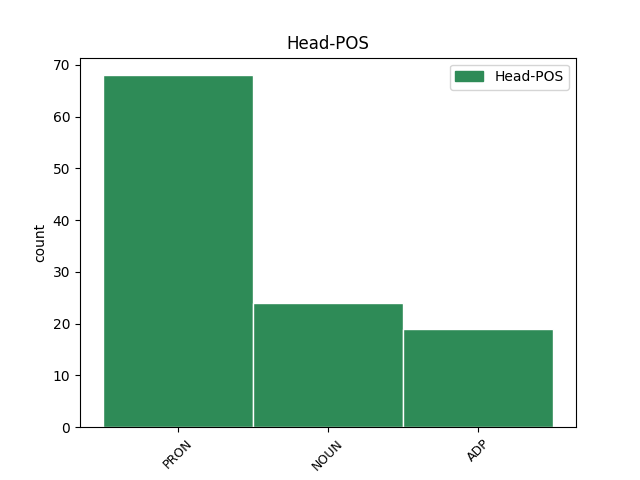
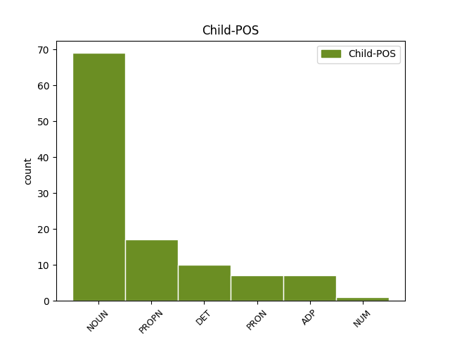

Distribution of features within this leaf



Agreement Rules sorted by frequency.
- When the dependent token is the subject(subj) of the head token, and the head token is NOUN and the dependent token is NOUN.
1 Imamo _ _ _ _ 0 _ _ _
2 sve _ _ _ _ 0 _ _ _
3 češće _ _ _ _ 0 _ _ _
4 pritužbe _ _ _ _ 0 _ _ _
5 roditelja _ _ _ _ 0 _ _ _
6 da _ _ _ _ 0 _ _ _
7 spriječeno _ _ _ _ 0 _ _ _
8 vrijeme vrijeme NOUN Ncnsn Case=Nom|Gender=Neut|Number=Sing 21 subj _ SpaceAfter=No
9 , _ _ _ _ 0 _ _ _
10 npr. _ _ _ _ 0 _ _ _
11 jedno _ _ _ _ 0 _ _ _
12 popodne _ _ _ _ 0 _ _ _
13 ili _ _ _ _ 0 _ _ _
14 vikend _ _ _ _ 0 _ _ _
15 , _ _ _ _ 0 _ _ _
16 prema _ _ _ _ 0 _ _ _
17 mišljenju _ _ _ _ 0 _ _ _
18 djelatnika _ _ _ _ 0 _ _ _
19 CZSS _ _ _ _ 0 _ _ _
20 nije _ _ _ _ 0 _ _ _
21 praksa praksa NOUN Ncfsn Case=Nom|Gender=Fem|Number=Sing 0 _ _ _
22 da _ _ _ _ 0 _ _ _
23 se _ _ _ _ 0 _ _ _
24 nadoknađuje _ _ _ _ 0 _ _ _
25 , _ _ _ _ 0 _ _ _
26 što _ _ _ _ 0 _ _ _
27 roditelju _ _ _ _ 0 _ _ _
28 koji _ _ _ _ 0 _ _ _
29 to _ _ _ _ 0 _ _ _
30 spriječava _ _ _ _ 0 _ _ _
31 šalje _ _ _ _ 0 _ _ _
32 poruku _ _ _ _ 0 _ _ _
33 da _ _ _ _ 0 _ _ _
34 je _ _ _ _ 0 _ _ _
35 takvo _ _ _ _ 0 _ _ _
36 ponašanje _ _ _ _ 0 _ _ _
37 u _ _ _ _ 0 _ _ _
38 redu _ _ _ _ 0 _ _ _
39 , _ _ _ _ 0 _ _ _
40 i _ _ _ _ 0 _ _ _
41 podržava _ _ _ _ 0 _ _ _
42 protuzakonito _ _ _ _ 0 _ _ _
43 postupanje _ _ _ _ 0 _ _ _
44 na _ _ _ _ 0 _ _ _
45 štetu _ _ _ _ 0 _ _ _
46 djeteta _ _ _ _ 0 _ _ _
47 . _ _ _ _ 0 _ _ _
1 Gartner _ _ _ _ 0 _ _ _
2 je _ _ _ _ 0 _ _ _
3 objavio _ _ _ _ 0 _ _ _
4 rezultate _ _ _ _ 0 _ _ _
5 globalnog _ _ _ _ 0 _ _ _
6 istraživanja _ _ _ _ 0 _ _ _
7 tržišta _ _ _ _ 0 _ _ _
8 mobilnih _ _ _ _ 0 _ _ _
9 telefona _ _ _ _ 0 _ _ _
10 u _ _ _ _ 0 _ _ _
11 trećem _ _ _ _ 0 _ _ _
12 kvartalu _ _ _ _ 0 _ _ _
13 prema _ _ _ _ 0 _ _ _
14 kojima _ _ _ _ 0 _ _ _
15 je _ _ _ _ 0 _ _ _
16 usprkos _ _ _ _ 0 _ _ _
17 velikom _ _ _ _ 0 _ _ _
18 padu _ _ _ _ 0 _ _ _
19 Nokia _ _ _ _ 0 _ _ _
20 i _ _ _ _ 0 _ _ _
21 dalje _ _ _ _ 0 _ _ _
22 vodeći _ _ _ _ 0 _ _ _
23 proizvođač _ _ _ _ 0 _ _ _
24 a _ _ _ _ 0 _ _ _
25 Symbian Symbian PROPN Npmsn Case=Nom|Gender=Masc|Number=Sing 28 subj _ _
26 vodeći _ _ _ _ 0 _ _ _
27 operativni _ _ _ _ 0 _ _ _
28 sustav sustav NOUN Ncmsn Case=Nom|Gender=Masc|Number=Sing 0 _ _ _
29 za _ _ _ _ 0 _ _ _
30 " _ _ _ _ 0 _ _ _
31 pametne _ _ _ _ 0 _ _ _
32 " _ _ _ _ 0 _ _ _
33 mobilne _ _ _ _ 0 _ _ _
34 telefone _ _ _ _ 0 _ _ _
35 . _ _ _ _ 0 _ _ _
1 Ovaj _ _ _ _ 0 _ _ _
2 nogometni _ _ _ _ 0 _ _ _
3 stručnjak _ _ _ _ 0 _ _ _
4 dobio _ _ _ _ 0 _ _ _
5 je _ _ _ _ 0 _ _ _
6 prepoznatljivi _ _ _ _ 0 _ _ _
7 nadimak _ _ _ _ 0 _ _ _
8 Ćiro _ _ _ _ 0 _ _ _
9 po _ _ _ _ 0 _ _ _
10 lutku _ _ _ _ 0 _ _ _
11 iz iz ADP Sg Case=Gen 0 _ _ _
12 predstave _ _ _ _ 0 _ _ _
13 nekog _ _ _ _ 0 _ _ _
14 trbuhozborca trbuhozborac NOUN Ncmsg Case=Gen|Gender=Masc|Number=Sing 11 subj _ SpaceAfter=No
15 . _ _ _ _ 0 _ _ _
1 No _ _ _ _ 0 _ _ _
2 , _ _ _ _ 0 _ _ _
3 polovicom _ _ _ _ 0 _ _ _
4 tjedna _ _ _ _ 0 _ _ _
5 Irska _ _ _ _ 0 _ _ _
6 je _ _ _ _ 0 _ _ _
7 , _ _ _ _ 0 _ _ _
8 ipak _ _ _ _ 0 _ _ _
9 , _ _ _ _ 0 _ _ _
10 pristala _ _ _ _ 0 _ _ _
11 na _ _ _ _ 0 _ _ _
12 suradnju _ _ _ _ 0 _ _ _
13 s _ _ _ _ 0 _ _ _
14 timom _ _ _ _ 0 _ _ _
15 stručnjaka stručnjak NOUN Ncmpg Case=Gen|Gender=Masc|Number=Plur 0 _ _ _
16 iz iz ADP Sg Case=Gen 15 subj _ _
17 EU-a _ _ _ _ 0 _ _ _
18 i _ _ _ _ 0 _ _ _
19 Međunarodnog _ _ _ _ 0 _ _ _
20 monetarnog _ _ _ _ 0 _ _ _
21 fonda _ _ _ _ 0 _ _ _
22 , _ _ _ _ 0 _ _ _
23 pa _ _ _ _ 0 _ _ _
24 na _ _ _ _ 0 _ _ _
25 tržištima _ _ _ _ 0 _ _ _
26 prevladava _ _ _ _ 0 _ _ _
27 uvjerenje _ _ _ _ 0 _ _ _
28 da _ _ _ _ 0 _ _ _
29 će _ _ _ _ 0 _ _ _
30 uskoro _ _ _ _ 0 _ _ _
31 biti _ _ _ _ 0 _ _ _
32 donesena _ _ _ _ 0 _ _ _
33 odluka _ _ _ _ 0 _ _ _
34 o _ _ _ _ 0 _ _ _
35 pomoći _ _ _ _ 0 _ _ _
36 Irskoj _ _ _ _ 0 _ _ _
37 da _ _ _ _ 0 _ _ _
38 prevlada _ _ _ _ 0 _ _ _
39 krizu _ _ _ _ 0 _ _ _
40 . _ _ _ _ 0 _ _ _
Disagree Examples:
1 Mnogi _ _ _ _ 0 _ _ _
2 članovi _ _ _ _ 0 _ _ _
3 stranke _ _ _ _ 0 _ _ _
4 smatrali _ _ _ _ 0 _ _ _
5 su _ _ _ _ 0 _ _ _
6 da _ _ _ _ 0 _ _ _
7 je _ _ _ _ 0 _ _ _
8 Lagumdžijina _ _ _ _ 0 _ _ _
9 odluka _ _ _ _ 0 _ _ _
10 o _ _ _ _ 0 _ _ _
11 ulasku _ _ _ _ 0 _ _ _
12 u _ _ _ _ 0 _ _ _
13 koaliciju _ _ _ _ 0 _ _ _
14 sa _ _ _ _ 0 _ _ _
15 Strankom _ _ _ _ 0 _ _ _
16 demokratske _ _ _ _ 0 _ _ _
17 akcije _ _ _ _ 0 _ _ _
18 ( _ _ _ _ 0 _ _ _
19 SDA _ _ _ _ 0 _ _ _
20 ) _ _ _ _ 0 _ _ _
21 bila _ _ _ _ 0 _ _ _
22 autokratska _ _ _ _ 0 _ _ _
23 -- _ _ _ _ 0 _ _ _
24 a _ _ _ _ 0 _ _ _
25 potpunom _ _ _ _ 0 _ _ _
26 izdajom _ _ _ _ 0 _ _ _
27 proglasila _ _ _ _ 0 _ _ _
28 ju _ _ _ _ 0 _ _ _
29 je _ _ _ _ 0 _ _ _
30 i _ _ _ _ 0 _ _ _
31 većina većina NOUN Ncfsn Case=Nom|Gender=Fem|Number=Sing 0 _ _ _
32 stranačkih _ _ _ _ 0 _ _ _
33 krugova krug NOUN Ncmpg Case=Gen|Gender=Masc|Number=Plur 31 subj _ SpaceAfter=No
34 , _ _ _ _ 0 _ _ _
35 kao _ _ _ _ 0 _ _ _
36 i _ _ _ _ 0 _ _ _
37 građana _ _ _ _ 0 _ _ _
38 koji _ _ _ _ 0 _ _ _
39 su _ _ _ _ 0 _ _ _
40 izrazili _ _ _ _ 0 _ _ _
41 potporu _ _ _ _ 0 _ _ _
42 SDP-u _ _ _ _ 0 _ _ _
43 na _ _ _ _ 0 _ _ _
44 izborima _ _ _ _ 0 _ _ _
45 . _ _ _ _ 0 _ _ _
1 Srpska _ _ _ _ 0 _ _ _
2 zajednica zajednica NOUN Ncfsn Case=Nom|Gender=Fem|Number=Sing 3 subj _ _
3 od od ADP Sg Case=Gen 0 _ _ _
4 tada _ _ _ _ 0 _ _ _
5 odbija _ _ _ _ 0 _ _ _
6 priznati _ _ _ _ 0 _ _ _
7 tu _ _ _ _ 0 _ _ _
8 odluku _ _ _ _ 0 _ _ _
9 , _ _ _ _ 0 _ _ _
10 stavljajući _ _ _ _ 0 _ _ _
11 pred _ _ _ _ 0 _ _ _
12 nekoliko _ _ _ _ 0 _ _ _
13 izazova _ _ _ _ 0 _ _ _
14 UN _ _ _ _ 0 _ _ _
15 i _ _ _ _ 0 _ _ _
16 kosovske _ _ _ _ 0 _ _ _
17 vlasti _ _ _ _ 0 _ _ _
18 - _ _ _ _ 0 _ _ _
19 uključujući _ _ _ _ 0 _ _ _
20 , _ _ _ _ 0 _ _ _
21 početkom _ _ _ _ 0 _ _ _
22 ožujka _ _ _ _ 0 _ _ _
23 , _ _ _ _ 0 _ _ _
24 preuzimanje _ _ _ _ 0 _ _ _
25 željezničke _ _ _ _ 0 _ _ _
26 linije _ _ _ _ 0 _ _ _
27 od _ _ _ _ 0 _ _ _
28 strane _ _ _ _ 0 _ _ _
29 Srbijanskih _ _ _ _ 0 _ _ _
30 željeznica _ _ _ _ 0 _ _ _
31 . _ _ _ _ 0 _ _ _
1 Njemu _ _ _ _ 0 _ _ _
2 kao _ _ _ _ 0 _ _ _
3 CiO-u _ _ _ _ 0 _ _ _
4 pomaže _ _ _ _ 0 _ _ _
5 takozvana _ _ _ _ 0 _ _ _
6 Ministarska _ _ _ _ 0 _ _ _
7 trojka _ _ _ _ 0 _ _ _
8 u u ADP Sl Case=Loc 0 _ _ _
9 kojoj _ _ _ _ 0 _ _ _
10 su _ _ _ _ 0 _ _ _
11 ove _ _ _ _ 0 _ _ _
12 godine _ _ _ _ 0 _ _ _
13 ministri ministar NOUN Ncmpn Case=Nom|Gender=Masc|Number=Plur 8 subj _ _
14 vanjskih _ _ _ _ 0 _ _ _
15 poslova _ _ _ _ 0 _ _ _
16 Nizozemske _ _ _ _ 0 _ _ _
17 , _ _ _ _ 0 _ _ _
18 Bugarske _ _ _ _ 0 _ _ _
19 i _ _ _ _ 0 _ _ _
20 Slovenije _ _ _ _ 0 _ _ _
21 . _ _ _ _ 0 _ _ _
1 Festival _ _ _ _ 0 _ _ _
2 , _ _ _ _ 0 _ _ _
3 koji koji DET Pi-msn Case=Nom|Gender=Masc|Number=Sing|PronType=Int,Rel 4 subj _ _
4 se sebe PRON Px--sa Case=Acc|PronType=Prs|Reflex=Yes 0 _ _ _
5 zatvara _ _ _ _ 0 _ _ _
6 u _ _ _ _ 0 _ _ _
7 nedjelju _ _ _ _ 0 _ _ _
8 ( _ _ _ _ 0 _ _ _
9 16. _ _ _ _ 0 _ _ _
10 ožujka _ _ _ _ 0 _ _ _
11 ) _ _ _ _ 0 _ _ _
12 , _ _ _ _ 0 _ _ _
13 usredotočen _ _ _ _ 0 _ _ _
14 je _ _ _ _ 0 _ _ _
15 na _ _ _ _ 0 _ _ _
16 balkansku _ _ _ _ 0 _ _ _
17 kinematografiju _ _ _ _ 0 _ _ _
18 . _ _ _ _ 0 _ _ _
1 Nasilje _ _ _ _ 0 _ _ _
2 protiv _ _ _ _ 0 _ _ _
3 međunarodnih _ _ _ _ 0 _ _ _
4 misija _ _ _ _ 0 _ _ _
5 opasan _ _ _ _ 0 _ _ _
6 je _ _ _ _ 0 _ _ _
7 presedan _ _ _ _ 0 _ _ _
8 koji koji DET Pi-msn Case=Nom|Gender=Masc|Number=Sing|PronType=Int,Rel 9 subj _ _
9 se sebe PRON Px--sa Case=Acc|PronType=Prs|Reflex=Yes 0 _ _ _
10 mora _ _ _ _ 0 _ _ _
11 osuditi _ _ _ _ 0 _ _ _
12 . _ _ _ _ 0 _ _ _